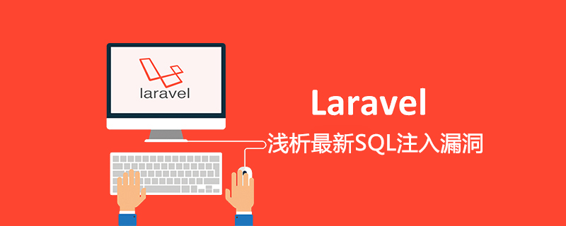
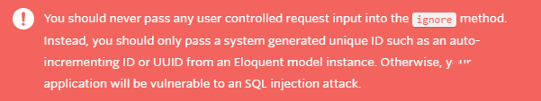

原文出处:本文由博客园博主it-world提供。
原文连接:https://www.cnblogs.com/it-3327/p/11764561.html
原文连接:https://www.cnblogs.com/it-3327/p/11764561.html
PHP知名开发框架Laravel，之前在官方博客通报了一个高危SQL注入漏洞，这里简单分析下。

首先，这个漏洞属于网站coding写法不规范，官方给了提示：

但官方还是做了修补，升级最新版本V5.8.7可修复。
我们先定位下这里：
Illuminate\Validation\Rule
官方推荐的写法是：
Rule::unique('users')->ignore($id),
如果网站coding没有预先对$id的值做处理时，用户可以直接传递恶意数据给ignore函数，就会导致SQL注入。
我们来跟一下函数：
\Illuminate\Validation\Rules\Unique.php class Unique {
... public function ignore($id, $idColumn = null) { if ($id instanceof Model) { return $this->ignoreModel($id, $idColumn);
} $this->ignore = $id; $this->idColumn = $idColumn ?? 'id'; return $this;
}
这里我们不考虑把$id写成实例的情况，$id是用户可控的话，$idColumn直接写为空即可，最后赋值情况如下：
$this->ignore = $id; $this->idColumn = 'id';


链接：https://pan.baidu.com/s/1v5gm7n0L7TGyejCmQrMh2g 提取码：x2p5
免费分享，但是X度限制严重，如若链接失效点击链接或搜索加群 群号518475424。
如果网站代码类似这样构造的话，黑客输入的值就属于可控状态：
$id = $request->input('id');
最后我们会走到这儿：
Illuminate\Validation\Rules\Unique.php public function __toString() {
...
...
}
我们看下关键的代码变更：
Illuminate\Validation\Rules\Unique.php
V5.8.7【最新版】 public function __toString() { $this->ignore ? '"'.addslashes($this->ignore).'"' : 'NULL',
}
Illuminate\Validation\Rules\Unique.php
V5.8.4 public function __toString() { $this->ignore ? '"'.$this->ignore.'"' : 'NULL',
}
这里最新的代码v5.8.7，把$this->ignore直接给addslashes了，以前这里是没有防护的。
有趣的是，笔者对比了下diff，期间官方还试图对其他引用的地方进行过滤。最后还是在__toString处，进行了统一的过滤。
最后提一句，后面的代码会进入DatabaseRule，进行后续SQL规则匹配。
Illuminate\Validation\Rules\DatabaseRule.php
这之后就没有再进一步处理，接着形成了SQL注入。